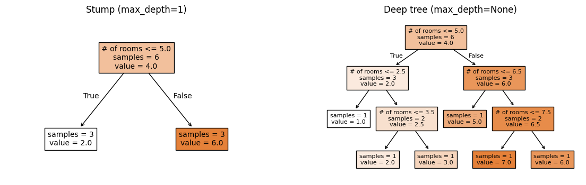
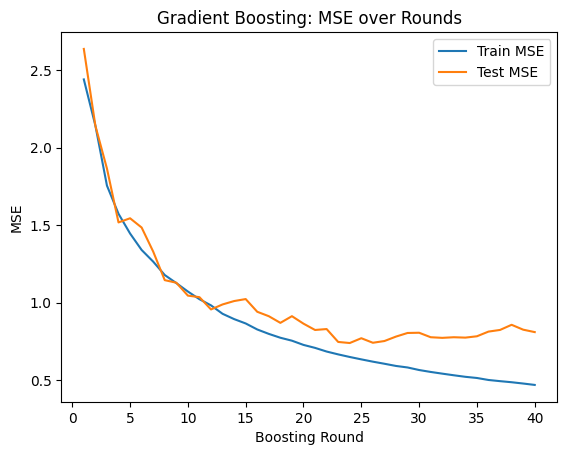

HW 3 part 1#
Ensembling: Foundations
—TODO your name here
Collaboration Statement
TODO brief statement on the nature of your collaboration.
TODO your collaborators’ names here
Part 1 Table of Contents and Rubric#
Section |
Points |
|---|---|
Variance reduction with ensembling |
1.25 |
Decision trees and bias-variance |
1.25 |
Implementing tree ensembles |
3 |
Total |
5.5 pts |
Notebook and function imports#
import pandas as pd
import numpy as np
import matplotlib.pyplot as plt
from sklearn.base import BaseEstimator
from sklearn.tree import DecisionTreeRegressor
from typing import Self
from ipywidgets import interact_manual
# random number generator
rng = np.random.RandomState(42)
1. Variance and ensembles [1.25 pts]#
In Class 12, we saw that random forests combine many trees and that “individual errors cancel out” when predictions are independent. In this section we’ll make that idea precise using variance, a quantity that measures how spread out a set of values is.
1.1 Variance definition [0.25 pts]#
In Worksheet 2, we saw the expectation of a random variable \(Y\) is the average value of \(Y\) over all possible outcomes. It is given by:
The variance of a random variable \(Y\) measures how spread out the values of \(Y\) are around its mean. It is defined as:
When we have a finite set of \(n\) values \(y_1, y_2, \ldots, y_n\) (where each value is equally likely), this simplifies to:
where \(\bar{y} = \frac{1}{n}\sum_{i=1}^{n} y_i\) is the mean.
To make this concrete, suppose we have trained four different decision trees \(f_1, f_2, f_3, f_4\), each time on a different random subset of the training data to predict housing prices. For a single test house with true value \(y=6\), the four trees make the following predictions:
What is the mean prediction \(\bar{f}\) across the four trees?
What is the variance of the predictions?
1.2 Why bagging reduces variance [1 pt]#
The core idea behind bagging (and random forests) for regression tasks is that averaging multiple independent predictions produces a more stable result than relying on any single prediction. This averaging for regression is equivalent to the majority voting we saw in classification.
Let’s see why this is the case mathematically. Suppose we have \(T\) independent random variables \(Y_1, Y_2, \ldots, Y_T\), each with the same variance \(\sigma^2\):
Note that this \(\sigma^2\) term represents the “inherent” variability of a single random variable. In the ensemble context, each \(Y_t\) represents the prediction of a different tree. We want to find the variance of the average of these predictions \(\overline{Y}\):
To complete our derivation, we’ll use the following two properties of variance:
Note
Scaling: For any constant \(c\) and random variable \(Y\):
Sum of independent variables: If \(X\) and \(Y\) are independent:
This extends to \(T\) independent variables: \(\text{Var}(Y_1 + Y_2 + \cdots + Y_T) = \text{Var}(Y_1) + \text{Var}(Y_2) + \cdots + \text{Var}(Y_T)\)
1.2.1 Complete the derivation of the variance of the average of the predictions by filling in each step. We start with:
Derivation tips
For step 1, use the scaling property of variance.
For step 2, use the sum of independent variables property of variance.
For step 3, simplify the summation using the fact that the variance of each \(Y_t\) is \(\sigma^2\).
Click to check derivation
After applying the variance properties and simplifying the summation, we get:
1.2.2 Using this result for \(\text{Var}(\bar{Y})\), suppose that the variance of a single decision tree is \(\sigma^2 = 5\). What would the variance of an ensemble of \(T = 4\) independent trees be? What about \(T = 100\) trees?
Ensemble variance with \(T = 4\): TODO
Ensemble variance with \(T = 100\): TODO
1.2.3 Based on your results above, what happens to the variance of the ensemble prediction as the number of trees \(T\) increases? What does that tell us about the “stability” of predictions made by an ensemble?
Your response: TODO
2. Decision trees and bias-variance [1.25 pts]#
We’ll now fit our own decision trees to verify these results empirically. First, let’s get familiar with sklearn’s implementation of decision trees. Specifically, sklearn provides two decision tree classes:
DecisionTreeClassifier for classification (predicting categories)
DecisionTreeRegressor for regression (predicting continuous values)
Both follow the same .fit() / .predict() interface we’ve used and practiced all semester. The key hyperparameter is max_depth, which controls the maximum depth of the tree:
from sklearn.tree import DecisionTreeRegressor
# max_depth controls complexity: deeper = more complex
tree = DecisionTreeRegressor(max_depth=3, random_state=42)
tree.fit(X_train, y_train)
y_pred = tree.predict(X_test)
A few things to note:
max_depth=None(the default) means the tree grows until no more splits are possible that reduce the loss function. This can memorize the training data and overfit.max_depth=1creates a “decision stump”: a tree with a single split. Very simple, but often underfits. Decision stumps are often used as the “base model” in boosting algorithms.random_statecontrols the random number generator. When there are ties between equally good splits, sklearn breaks them randomly, so settingrandom_stateensures reproducibility.No
StandardScaleris needed to prepare the data. Unlike logistic and linear regression, decision trees split on raw feature values and don’t rely on gradient descent, so scaling doesn’t change the result.
Regression vs. Classification
Decision tree regressors predict continuous values (house prices). At each leaf, the prediction is the mean of the training examples that fall into that leaf.
Decision tree classifiers predict categories (penguin species). At each leaf, the
prediction is the majority class, and .predict_proba() returns
the proportion of each class.
We’ll use DecisionTreeRegressor in this section to connect with the
variance math from the questions above.
2.1 Visualizing decision trees [0.5 pts]#
Let’s practice the API with a small housing dataset: predicting house prices from the number of rooms. Complete the cell below to fit a depth-1 decision stump and a deep tree with no depth limit:
if __name__ == "__main__":
from sklearn.tree import DecisionTreeRegressor
# A small toy dataset: 6 houses with one feature (number of total rooms)
X_toy = np.array([[2],
[3],
[4],
[6],
[7],
[8]])
y_toy = np.array([1, 2, 3, 5, 7, 6])
# TODO initialize and fit a depth-1 stump
stump = None
stump_predictions = None
#print("Stump predictions:", stump_predictions)
# TODO initialize and fit a deep tree (no depth limit)
deep = None
deep_predictions = None
#print("Deep tree predictions:", deep_predictions)
Visualizing decision trees with plot_tree#
sklearn provides plot_tree
to visualize the splits and predictions of a fitted tree. It works with
matplotlib’s object-oriented interface that we practiced in Worksheet 3:
we create a fig and ax using plt.subplots(), then pass the ax to
plot_tree.
Some useful parameters:
feature_names=feature_names: a list of feature name strings, so the plot shows the name of the featuresfontsize: controls the text size inside each nodefilled=True: colors each node by its predicted value (darker = higher)impurity=False: hides the splitting metric (called “impurity” in the sklearn docs) to reduce visual clutterax: a matplotlib axis object, so the plot is drawn on the axis
We add an additional variation to the plt.subplots() call to create a figure with two subplots side by side: by specifying the first two parameters as 1, 2, we create a figure with 1 row and 2 columns of subplots:
# first parameter is the number of rows, second is the number of columns
fig, axs = plt.subplots(1, 2, figsize=(14, 4))
Then, we can access each axis by indexing into axs:
axs[0] # left subplot
axs[1] # right subplot
Complete the cell below to plot the stump and deep tree side by side using this approach. You can adjust the fontsize parameter to make the plot more readable by setting it to a smaller value if there are too many nodes.
if __name__ == "__main__":
from sklearn.tree import plot_tree
import matplotlib.pyplot as plt
feature_names = ["# of rooms"]
# Create a figure with two subplots
fig, axs = plt.subplots(1, 2, figsize=(14, 4))
# TODO plot the stump you fitted in the previous cell on the left (axs[0])
#plot_tree(TODO)
axs[0].set_title("Stump (max_depth=1)")
# TODO plot the deep tree you fitted in the previous cell on the right (axs[1])
#plot_tree(TODO)
axs[1].set_title("Deep tree (max_depth=None)")
plt.show()
Click to check sample plot
Your calls to plot_tree that place the stump on axs[0] and the deep tree on axs[1] should look approximately like the following:

2.2 Bootstrap Sampling [0.25 pts]#
A key ingredient in ensemble methods is bootstrap sampling: drawing \(n\) examples with replacement from a dataset of \(n\) examples. Because we sample with replacement, each bootstrap sample contains some duplicate rows and omits others.
Why do we want duplicates? The idea here is that by treating the original dataset as a “true” population to sample from, drawing samples with replacement gives us a way to simulate “training on different datasets” when we only have one dataset. Each bootstrap sample is a slightly different view of the data, which leads to slightly different trees, which is exactly the diversity we need for ensembling.
To draw a bootstrap sample in numpy, we can use rng.choice to sample indices with replacement, then use those indices to select the rows of X and y:
seed = 42
# Initialize a random number generator with a specific seed for reproducibility
rng = np.random.RandomState(seed)
# setting replace=True means we can sample the same index multiple times (with replacement)
# n is the number of examples in the dataset
bootstrap_idx = rng.choice(n, size=n, replace=True)
X_bootstrap = X[bootstrap_idx]
y_bootstrap = y[bootstrap_idx]
Visit the NumPy documentation for rng.choice to understand what all three parameters shown in the code above do, then implement the bootstrap_sample function below. We’ll reuse this function throughout the rest of part 1.
def bootstrap_sample(X: np.ndarray, y: np.ndarray, random_state: int) -> tuple[np.ndarray, np.ndarray]:
"""Create a bootstrap sample from feature matrix X and targets y.
Args:
X: feature 2D array of shape (n, p)
y: target 1D array of shape (n,)
random_state: random seed for reproducibility
Returns:
X_boot: bootstrapped features of shape (n, p)
y_boot: bootstrapped targets of shape (n,)
"""
# TODO your code here
return None, None
if __name__ == "__main__":
# Test with small data
X_small = np.array([[1, 2], [3, 4], [5, 6], [7, 8]])
y_small = np.array([10, 20, 30, 40])
X_boot, y_boot = bootstrap_sample(X_small, y_small, random_state=0)
assert X_boot.shape == X_small.shape, f"Expected shape {X_small.shape}, got {X_boot.shape}"
assert y_boot.shape == y_small.shape, f"Expected shape {y_small.shape}, got {y_boot.shape}"
# Verify reproducibility
X_boot2, y_boot2 = bootstrap_sample(X_small, y_small, random_state=0)
assert np.array_equal(X_boot, X_boot2), "Same seed should give same result"
pandas equivalent
If you’re working with a pandas DataFrame instead of numpy arrays,
you can use
DataFrame.sample() to generate a bootstrap sample:
boot_df = df.sample(n=len(df), replace=True, random_state=42)
2.3 Bias and Variance [0.5 pts]#
Based on the tree plots from 2.1, we can see that a stump (max_depth=1)
and a deep tree (max_depth=None) make very different predictions.
But they make errors in different ways:
The stump will only ever predict two possible values. It’s consistently off with predictions that are too “coarse” because a single split can’t capture the full pattern.
The deep tree will predict the exact values of the training data. But if we trained it on a different random sample, it would memorize that sample and give very different predictions.
These two types of errors can be quantified by two concepts:
Bias measures how far off a model’s average prediction is from the truth. A model with high bias is consistently wrong in the same direction: like the stump, which systematically oversimplifies. Mathematically, for a single datapoint \((\vec{x}, y)\) and a given model \(f\) with fixed hyperparameters, the bias is expressed as:
Where \(\bar{f}(\vec{x})\) is the mean model output over the given predictions.
Variance measures how much a model’s predictions fluctuate when trained on different data. A model with high variance is “unstable”: like the deep tree, which gives very different answers depending on the training set. Mathematically, we use the same variance calculation from the previous section, this time over all of the model predictions:
This choice of shallow vs deep tree illustrates the bias-variance tradeoff that is present in many machine learning models: simpler models (stumps) tend to have high bias and low variance, while complex models (deep trees) tend to have low bias and high variance.
Let’s explore these concepts empirically. Complete the compute_bias_variance function below. Note: you do not need to implement the variance equation from scratch, as it is already implemented in numpy as np.var.
def compute_bias_and_variance(predictions: np.ndarray, y_true: float) -> tuple[float, float]:
"""Compute the bias and variance of predictions for a single test point.
Args:
predictions: array of shape (n_bootstrap,) containing predictions
from models trained on different bootstrap samples
y_true: the true value for this test point
Returns:
bias: the difference between mean prediction and true value
variance: the variance of the predictions
"""
# TODO your code here
bias = None
variance = None
return bias, variance
if __name__ == "__main__":
# Test with a simple known example
test_preds = np.array([3.0, 5.0, 4.0, 4.0])
bias, var = compute_bias_and_variance(test_preds, y_true=6.0)
assert np.isclose(bias, -2.0), f"Expected bias=-2.0, got {bias}"
assert np.isclose(var, 0.5), f"Expected variance=0.5, got {var}"
# Test with constant predictions (zero variance)
const_preds = np.array([3.0, 3.0, 3.0])
bias_c, var_c = compute_bias_and_variance(const_preds, y_true=5.0)
assert np.isclose(bias_c, -2.0), f"Expected bias=-2.0, got {bias_c}"
assert np.isclose(var_c, 0.0), f"Expected variance=0.0, got {var_c}"
2.3.1 We will use our bootstrap sampling method to quantify the bias and variance of the stump and deep tree. Complete the cell below to take 50 bootstrap samples of X_train_sim and y_train_sim, train a stump and deep tree on each sample, then compute the bias and variance of the predictions on a single test point where the price of the house is $400k: y=4.
if __name__ == "__main__":
# Generates some synthetic regression data: 100 houses, 5 features
rng_sim = np.random.RandomState(42)
X_train_sim = rng_sim.uniform(1, 10, size=(100, 5))
y_train_sim = (2 * np.sin(X_train_sim[:, 0]) + 0.5 * X_train_sim[:, 0]
+ 3.4 + rng_sim.randn(100) * 0.8)
x_test_point = np.array([[5, 5, 5, 5, 5]]) # a new house with features [5, 5, 5, 5, 5]
y_true_point = 4.0 # true value for this house
# store the list of predictions for each model
stump_predictions = []
deep_predictions = []
n_bootstrap = 50
# loop over 50 bootstrap samples
for i in range(n_bootstrap):
# TODO take a bootstrap sample of the training data X_train_sim and y_train_sim
# NOTE: make sure to pass the random_state=i to bootstrap_sample() so that the seed is different
bootstrap_result = None # X_boot, y_boot = bootstrap_sample(...)
# TODO train a stump on the bootstrap sample
# TODO add the stump's prediction for this bootstrap sample to the list
stump_predictions.append(None)
# TODO train a deep tree on the bootstrap sample
# TODO add the deep tree's prediction for this bootstrap sample to the list
deep_predictions.append(None)
# TODO call compute_bias_and_variance() with the list of predictions and the true value for the test point
stump_bias, stump_variance = 0, 0
deep_bias, deep_variance = 0, 0
print(f"Stump bias: {stump_bias:.2f}, Stump variance: {stump_variance:.2f}")
print(f"Deep tree bias: {deep_bias:.2f}, Deep tree variance: {deep_variance:.2f}")
2.3.2 Which model has higher bias and which has higher variance?
Higher bias: TODO
Higher variance: TODO
Most non-neural network models need to balance bias and variance to achieve good overall performance with lower loss. In fact, if we use our usual MSE loss function it can be shown that the overall error of a model can be decomposed into bias and variance terms:
Compute the approximate MSE of the stump and deep tree using the bias and variance values from the previous cell, making sure to square the bias values:
Stump MSE: TODO
Deep tree MSE: TODO
Based on these empirical results on this small synthetic dataset, does a more complex or a simpler model appear to perform better in terms of overall loss?
Your response: TODO
Click to check takeaway
Exact numbers will vary, but for this small synthetic dataset, the deep tree has lower MSE, meaning it performs better in terms of overall loss. This is despite the fact that the deep tree has higher variance. In practice, if we wanted to use a decision tree, we would tune the max depth hyperparameter through cross-validation to find the sweet spot between bias and variance that minimizes overall loss.
Generally in modern machine learning, the overall engineering approach is to build a complex model that can appropriately fit the relationship between features and targets, then use regularization to control the variance. This approach carries forward into deep learning with neural networks.
3. Implementing Tree Ensembles [3 pts]#
Now that we’ve explored the variance of trees mathematically (Section 1) and empirically (Section 2), let’s implement the bagging and boosting ensemble strategies from scratch using DecisionTreeRegressor.
3.1 Data Setup#
Run the cell below to generate a synthetic dataset for us to use in this section, with our usual names of X_train, X_test, y_train, and y_test. There are 80 data examples in the training set and 20 in the test set.
if __name__ == "__main__":
from sklearn.model_selection import train_test_split
rng_sim = np.random.RandomState(42)
X_all = rng_sim.uniform(1, 10, size=(100, 5))
y_all = (2 * np.sin(X_all[:, 0]) + 0.5 * X_all[:, 0]
+ 3.4 + rng_sim.randn(100) * 1.0)
X_train, X_test, y_train, y_test = train_test_split(
X_all, y_all, test_size=0.2, random_state=42
)
feature_names_sim = ["rooms", "lot_size", "age", "dist_school", "neighborhood"]
print(f"# training examples: {X_train.shape[0]}, # test examples: {X_test.shape[0]}")
3.2 Tree Bagging [1.5 pts]#
In Section 1.2, we showed that averaging \(T\) independent predictions reduces variance. Let’s now implement that idea directly with a bagging ensemble.
Bagging model:
fit(): For each tree \(t = 1, \ldots, T\): draw a bootstrap sample usingbootstrap_sample(), then train aDecisionTreeRegressor(max_depth=max_depth, random_state=t)model on it.predict(): average all \(T\) trees’ predictions to produce the final prediction.
Read through the MHCBaggingRegressor docstring and __init__ method below. Then, complete the fit() and predict() methods.
Note
This is exactly the mechanism behind RandomForestRegressor in sklearn. The only difference is that RandomForestRegressor also adds random feature subsets on top of bootstrap sampling.
class MHCBaggingRegressor(BaseEstimator):
"""Bagging ensemble of decision trees for regression.
This class implements bootstrap aggregating (bagging) by training multiple
decision trees on bootstrap samples and averaging their predictions.
"""
def __init__(self, n_trees: int = 50, max_depth: int | None = None):
"""Initialize the bagging regressor.
Args:
n_trees: number of trees T to train
max_depth: max depth for each tree (None = unlimited)
"""
self.n_trees = n_trees
self.max_depth = max_depth
self.trees = []
def fit(self, X: np.ndarray, y: np.ndarray) -> Self:
"""Fit the bagging ensemble on training data.
Args:
X: training features, shape (n_train, p)
y: training targets, shape (n_train,)
Returns:
self: the fitted model
"""
# TODO for each tree t = 1, ..., T:
for t in range(self.n_trees):
# Draw a bootstrap sample using `bootstrap_sample()`
X_boot, y_boot = None, None
# Fit a decision tree on the bootstrap sample with max_depth=self.max_depth and random_state=t
tree = None
# Add the tree to the list of trees
self.trees.append(tree)
return self
def predict(self, X: np.ndarray) -> np.ndarray:
"""Predict using the bagging ensemble.
Args:
X: features to predict on, shape (n, p)
Returns:
predictions: averaged predictions from all trees, shape (n,)
"""
# Generates a 2D array of shape (n, T) where each column contains the predictions from each of the T trees on the test data
all_preds = np.column_stack([tree.predict(X) for tree in self.trees])
# TODO take the mean of the predictions over all trees
return None
Hint
For the predict() method, we have to pay attention to which axis to reduce. The line of starter code we give creates an array called all_preds where each column contains the predictions from each of the \(T\) trees on the test data. If all_preds has shape (n, T), and the return value of this function is a 1D array of shape (n,), which axis do we need to take the mean over?
if __name__ == "__main__":
# Test cases
bagging_regressor = MHCBaggingRegressor(n_trees=50, max_depth=None)
bagging_regressor.fit(X_train, y_train)
assert len(bagging_regressor.trees) == 50, "Expected 50 trees to be fit, got {}".format(len(bagging_regressor.trees))
y_pred = bagging_regressor.predict(X_test)
assert y_pred.shape == (X_test.shape[0],), "Expected predictions to have shape (n,), got {}".format(y_pred.shape)
Now let’s explore how the number of trees and tree depth affect bagging performance. Run the cell below to fit an MHCBaggingRegressor for each combination of n_trees and max_depth:
n_trees: 1, 5, 50max_depth: 1, None
if __name__ == "__main__":
from sklearn.metrics import mean_squared_error
n_trees_list = [1, 5, 50]
max_depth_list = [1, None]
df_dict = {
"n_trees": [],
"max_depth": [],
"test_mse": []
}
for max_depth in max_depth_list:
for n_trees in n_trees_list:
model = MHCBaggingRegressor(n_trees=n_trees, max_depth=max_depth)
model.fit(X_train, y_train)
test_mse = mean_squared_error(y_test, model.predict(X_test))
df_dict["n_trees"].append(n_trees)
df_dict["max_depth"].append(str(max_depth))
df_dict["test_mse"].append(test_mse)
# render the results as a pandas DataFrame
display(pd.DataFrame(df_dict))
3.2.1 Look at the max_depth=None rows. What happens to test MSE as n_trees increases?
Your response: TODO
3.2.2 Now look at the max_depth=1 rows. Briefly discuss what you observe: does adding more stumps help in the same way? Why might that be?
Your response: TODO
Finally, let’s connect these results back to the bias-variance tradeoff from Section 2. Run the cell below to fit your MHCBaggingRegressor with n_trees=50 that computes the bias and variance of each tree’s prediction for a single test point using your compute_bias_and_variance() function from earlier:
if __name__ == "__main__":
# Same test point from Section 2.3
x_test_point = np.array([[5, 5, 5, 5, 5]])
y_true_point = 4.0
n_trees = 50
print(f"n_trees={n_trees} ensemble:")
for max_depth in [1, None]:
model = MHCBaggingRegressor(n_trees=n_trees, max_depth=max_depth)
model.fit(X_train, y_train)
# Extract each tree's individual prediction for the test point
per_tree_preds = np.array([tree.predict(x_test_point)[0] for tree in model.trees])
bias, variance = compute_bias_and_variance(per_tree_preds, y_true_point)
test_mse = mean_squared_error(y_test, model.predict(X_test))
print(f"\tmax_depth={max_depth}: " f"bias={bias:.3f}, var={variance:.3f}, MSE={test_mse:.3f}")
3.2.2 Given the results from the above cell and the math we did in Section 1.2, explain in 1-2 sentences why bagging appears to help the deep tree ensemble much more than the stump ensemble in terms of overall test MSE.
Your response: TODO
3.3 Tree boosting [0.75 pts]#
In Class 13, we computed gradient boosting by hand using decision stumps. Let’s implement it here using the DecisionTreeRegressor class.
Algorithm:
Initialize train and test predictions with the mean of the training targets:
For \(b = 1, 2, \ldots, B\) boosting rounds:
Compute the training residuals from the current ensemble: $\(r = y_\text{train} - \hat{y}_\text{train}\)$
Fit a decision stump \(f_b\) to predict the residuals on the training data \((x_i, r_i)\).
Update the ensemble’s training and testing predictions with learning rate \(\eta\):
Additionally, compute the training and testing MSE at each round to track boosting performance.
Note
Unlike bagging, gradient boosting does not use bootstrap sampling. Each stump is trained on the full training set, but targeting the current residuals.
Complete the function below that translates the above algorithm into code:
from sklearn.metrics import mean_squared_error
def gradient_boosting_regressor(
X_train: np.ndarray,
y_train: np.ndarray,
X_test: np.ndarray,
y_test: np.ndarray,
n_rounds: int = 50,
learning_rate: float = 0.5,
) -> tuple[list[float], list[float]]:
"""Implement gradient boosting for regression using decision stumps (depth-1 trees).
Args:
X_train: training features, shape (n_train, p)
y_train: training targets, shape (n_train,)
X_test: test features, shape (n_test, p)
y_test: test targets, shape (n_test,)
n_rounds: number of boosting rounds B
learning_rate: step size eta
Returns:
train_mse_list: list of train MSE at each round
test_mse_list: list of test MSE at each round
"""
# Make the initial predictions of mean of training targets, with shape (n_train,) and (n_test,) respectively
train_preds = np.array([np.mean(y_train)] * len(y_train))
test_preds = np.array([np.mean(y_train)] * len(y_test))
# Track the train and test MSE at each round
train_mse_list = []
test_mse_list = []
# TODO complete the boosting loop according to the algorithm above
for b in range(n_rounds):
# Update the training residuals from the current train predictions
residuals_train = None
# Fit a decision stump to predict residuals_train
stump = None
# Update the ensemble's training and testing predictions with learning rate
# NOTE: make sure to call predict() on X_train for the train preds, and X_test for the test preds
train_preds = None
test_preds = None
# Compute the training and testing MSE at each round to track boosting performance
train_mse_list.append(mean_squared_error(y_train, train_preds))
test_mse_list.append(mean_squared_error(y_test, test_preds))
return train_mse_list, test_mse_list
if __name__ == "__main__":
# Small example that can be computed by hand
X_train_small = np.array([[1],
[3]])
y_train_small = np.array([2.0, 6.0])
X_test_small = np.array([[2.5]])
y_test_small = np.array([6.0])
train_mse_list, test_mse_list = gradient_boosting_regressor(
X_train_small, y_train_small, X_test_small, y_test_small, n_rounds=2, learning_rate=0.5
)
# Round 1 predictions:
# Initial predictions are 4.0 (mean of y_train_small: (2+6)/2 = 4)
# Residuals: [2-4, 6-4] = [-2, 2]
# Decision stump with max_depth=1 will split at X=2.0
# Left (X<=2.0): mean residual = -2
# Right (X>2.0): mean residual = 2
assert len(train_mse_list) == 2, "Should have 2 train MSE values"
assert len(test_mse_list) == 2, "Should have 2 test MSE values"
assert np.isclose(train_mse_list[0], 1.0, atol=0.01), f"Train MSE round 1 should be 1, got {train_mse_list[0]}"
assert np.isclose(test_mse_list[0], 1.0, atol=0.01), f"Test MSE round 1 should be 1, got {test_mse_list[0]}"
3.4 Boosting MSE Widget [0.75 pts]#
Let’s now visualize the train and test MSE over boosting rounds. Complete the explore_boosting_mse() function below by plotting the train and test MSE using ax.plot(boosting_rounds, mse_list). Include:
both training and test MSE curves with labels
a legend
appropriate axis labels.
Then also add an interact_manual() decorator for the learning rate parameter:
learning_rate=(0.1, 1.0, 0.1)
You can refer back to the matplotlib quickstart guide as well as how we used the interact_manual() decorator in Worksheet 3 as references.
if __name__ == "__main__":
# TODO add interact_manual() decorator for the learning rate parameter
@interact_manual(learning_rate=(0.1, 1.0, 0.1))
def explore_boosting_mse(learning_rate):
n_rounds = 40
train_mse_list, test_mse_list = gradient_boosting_regressor(X_train, y_train, X_test, y_test, n_rounds=n_rounds, learning_rate=learning_rate)
boosting_rounds = range(1, n_rounds + 1)
fig, ax = plt.subplots()
# TODO: plot train and test MSE over boosting rounds
#plt.show()
3.4.1: Set the learning rate to 0.7. At approximately which round does test MSE stop improving? Describe any visual evidence of “overfitting” you see in the plot.
Your response: TODO
3.4.2: Use your widget to try out different learning rates. Applying some of our principles from the choices of learning rate for gradient descent we saw back on HW 1, what learning rate would you prefer for this dataset? It is okay to speculate here as long as you justify your reasoning.
Your response: TODO
Click here to verify your plot
There may be some variation in the exact numbers due to randomness, but your plot for learning rate 0.7 should look something like this:

How to submit
Follow the instructions on the course website to submit your work. For part 1, you will submit hw3_foundations.ipynb and hw3_foundations.py.